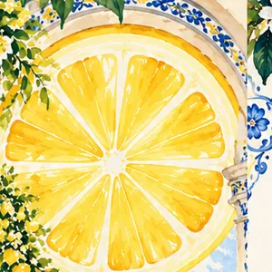
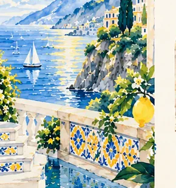
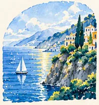
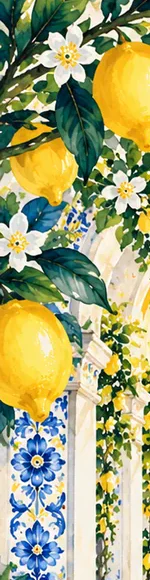

A Summer That Never Ends
A true story
In a small coastal town, there is a place where time moves differently. The sun here is a lemon, the walls are painted with flowers, and every day feels like the first day of summer.

The story, set in type
Page two · three passages from the artwork
The Lemon Sun
Every morning, the lemon sun rises over the sea, filling the town with golden light. It never sets, because here summer always finds a way to stay.
The slice is drawn at the scale of a sun and lit from inside, so the palette can travel from ceramic blue to warm yellow without inventing a sunset.

A Place to Belong
The streets are lined with lemon trees and hand-painted tiles. The air smells like citrus and the sea. It is a place where beauty lives in the details and you are always welcome.
A single boat is held at the same small scale as the tiles and the foliage. Nothing in the scene is more important than the pattern it sits in.

A Feeling, Not a Place
Maybe this town does not exist on a map. But it lives in the moments that make you feel alive. It is the warmth on your skin, the taste of something sweet, and the reminder that summer can live inside you, always.
Each passage is framed by the same arch. The repetition of a window, rather than of a subject, is what holds the column together.
A little taste of summer, wherever you are.
Closing line of the artworkNotes on the making
Editorial notes by the studioWatercolour with painted tile pattern and a lettered margin. The piece borrows the structure of a Mediterranean majolica panel: a decorated field, a picture inside it, and a margin that keeps working after the picture stops. It responds to that family of ceramic traditions without copying one historical panel.
The lemon slice is the only light source, so the illustration never needs weather. The arches are cropped as windows rather than frames: a branch, a terrace, a coastline, each a different distance from the same town.
The story text belongs to the artwork. Typesetting it as live text is a reading aid, not a new piece: the words, the spelling and the punctuation follow the illustration, and the artwork itself is shown unaltered above.
No motion film, no animated sun, no invented sequel. The approved direction was a main artwork with a separate framed botanical story page, and the two stay in separate files. Nothing has been added to the artwork to make this page work.

What is real.
The approved artwork is shown unaltered on page one and reproduced here at native size. The four detail plates are crops taken from that same file, labelled as details so they are never mistaken for separate works. The illustration, its palette and its lettering are the approved source of truth.